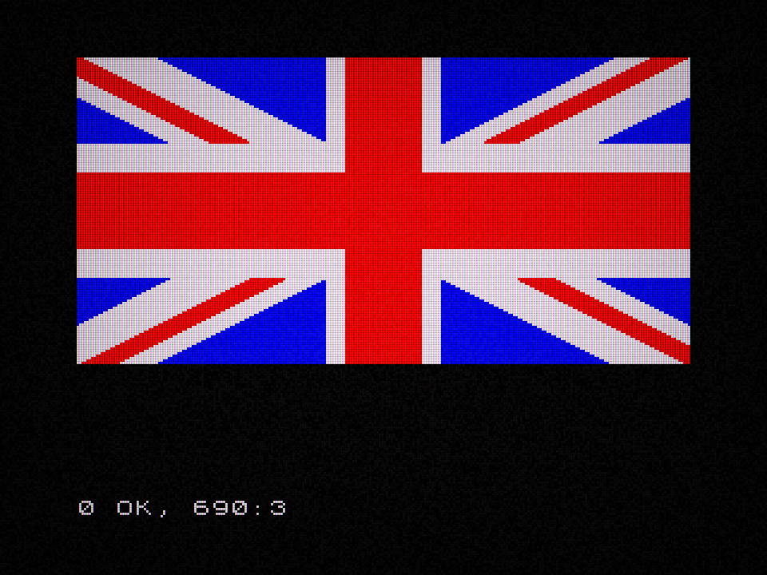
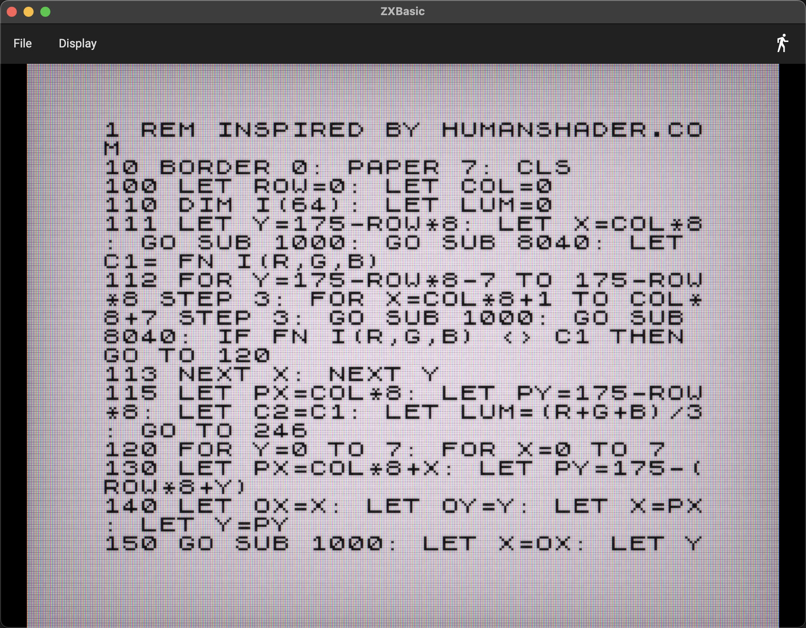

My parents bought my sister a ZX Spectrum 48K when I was about 5, and I've been coding ever since.
The ZX Spectrum did not ask you to create a project, choose a template or install seventeen packages.
It switched on and waited.
Unlike other computers at the time (BBC Micro, Commodore 64, ...) which had more of a 'typewriter'-style of input, and due to some quite cunning efficiency savings, the Spectrum had a novel way of entering BASIC code - Each key would translate to (at least one) command.
Once you got into the swing of things, entering code was a (relatively) fast and efficient process.
ZXBasic is my attempt to recreate that experience as a modern cross-platform application. It is not a complete Spectrum emulator (I've already written one of those: github.com/deanthecoder/zxspeculator). It is a BASIC interpreter and editor built around the behaviour that made the original machine such an inviting place to experiment. Except I did make it have typewriter-esque input, to make life easier on a modern keyboard.
I also added a couple of new commands, as I mention below.

The prompt is part of the language
Implementing BASIC statements is only half of the job. Spectrum BASIC also has a distinctive conversation with the user.
Program lines appear as a listing. Entering a numbered line inserts or replaces it. Entering a bare command executes it immediately. Clicking a listed line should bring it back for editing. A running program can be interrupted and later continued. Reports such as 0 OK belong in the right place, with the cursor ready for whatever comes next.
These details are easy to dismiss as interface decoration, but together they determine whether the application feels like BASIC or merely parses BASIC syntax.
I also reused a lot of code from my ZX Speculator project, so the CRT-effect screen and some of the sound support could be implemented quickly.

A 256×192 world of attributes
The Spectrum screen contains 256×192 pixels, but its colour is organised in character cells. Each 8×8 cell shares ink, paper, brightness and flash attributes. That limitation created the famous colour clash—and a great deal of the machine’s visual character, which I chose to keep in this project.
Drawing commands affect pixels while attributes determine how those pixels appear. PLOT, DRAW, CIRCLE, INK, PAPER, BRIGHT, FLASH and custom characters therefore need to interact in recognisably Spectrum-like ways.
The goal is not to reproduce every hardware quirk for its own sake. It is to preserve the constraints that shape the programs people write.
Drawing should happen while you watch
On the original machine, graphics appeared progressively because BASIC was doing the work in front of you. A complex drawing was not a final bitmap; it was a performance.
ZXBasic supports Spectrum-like execution speed, a faster mode and an unlimited mode. At normal speed, PLOT, DRAW and CIRCLE visibly build the image. Unlimited mode is there for programs such as Human Shader, where watching every individual operation would require considerably more tea than most people have available.
Changing speed while a program runs makes the difference especially clear. The semantics stay the same; only the waiting changes.
To get the timing values I ran various graphics-based BASIC code on ZX Emulator (which does a much more accurate job of emulating 'real' machine speed), then calculated the delays needed to reproduce that in ZXBasic.
Modern conveniences, carefully added
Authenticity is useful until it becomes ceremony.
ZXBasic accepts normal keyboard input, pasted listings and drag-and-drop files. It can open and save .bas programs and import BASIC from 48K .sna snapshots. Listings can be scrolled and clicked. Screenshots can be saved directly. Code can be RENUMbered.
Those features are deliberately outside the emulated experience. They make it easier to create and preserve programs without changing what those programs mean.
This balance matters. I wanted the machine’s constraints in the language and display, not in the file picker.
Programs are the real test suite
Small unit tests are useful for individual statements, but example programs expose the interactions between them.
- Union Jack combines drawing commands and attributes.
- Human Shader calculates a complete scene in BASIC.
- Mouse Paint exercises pointer input, normal and bright inks, erasing and flood fill.
- 3D Spinning Cube combines arrays, trigonometry and line drawing.
- ThunderCats depends on carefully joined paths and closed regions.
Each example began as a demonstration and then became a regression test in disguise. If a drawing develops a one-pixel gap, a fill escapes. If timing is wrong, animation changes character. If listing behaviour loses the current viewport, editing becomes annoying immediately.
Why an interpreter rather than another emulator?
I already have a full Spectrum emulator. ZXBasic explores a different question.
An emulator preserves a machine. An interpreter can preserve the act of programming it while making that act easier to share, test and extend. The screen still has colour clash. The language still encourages tiny loops and inventive shortcuts. But the surrounding application can behave like a good modern desktop tool.
That makes ZXBasic useful both as nostalgia and as a small creative environment. You can paste five lines, alter a number and immediately see what changed.
Which is more or less how the obsession started the first time around.
Download it or browse the source on GitHub.
See my ZX Spectrum emulator here.